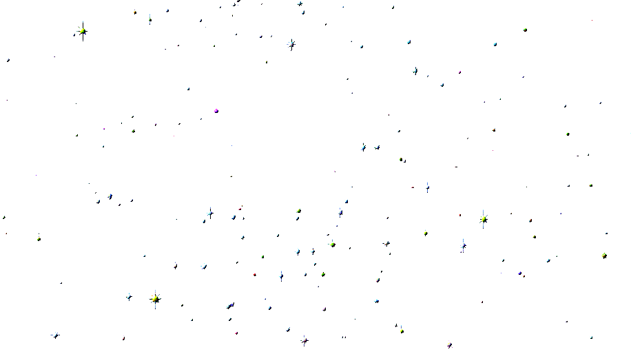

we don't exist actually

we don't exist actually

we don't exist actually


this is a website made as part of the course "websites as punkzines".
supervised by insa deist and hjördis lyn behncken @notes.on.studio
this website is dedicated to my 14-year old band obsessed self
and all the beautiful things about fandom.
illustrations contributed by luise sturm @annaluisesturm
photographs contributed by anna triebenbacher @_der.andere.account_
font in use: Façade by éléonore fines via www.velvetyne.fr
github copilot was used to assist in making this website.